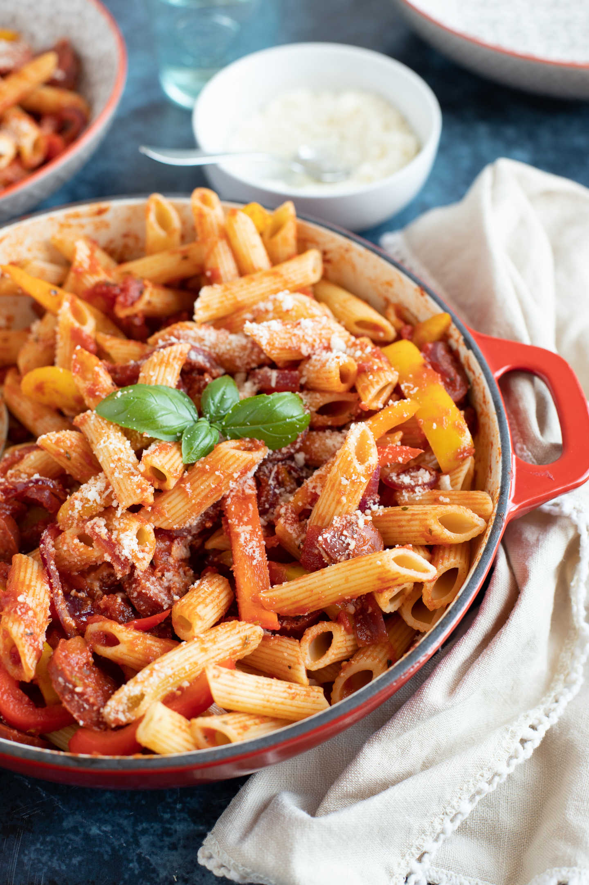

Chorizo Pasta

Mmm yummy slightly crunchy chorizo in pasta
This dish is straighforward and tasty af, but you have to watch how long you bake it
- one large onion or a number of salad/spring onions
- 4 cloves garlic
- a "rope" (?) of chorizo
- 2-3 tablespoons of mascarpone
- a bit of smelly blue cheeze
- a few cherry tomatoes
- a sweep pepper, any colour
- pepper, salt
- penne pasta for 4 persons
- Put on large pan of salted water to boil. Upon boiling, add penne for four persons. Set timer 10 minutes.
- Slice onions, peel garic, put to one side together. In another container, put sliced chorizo, tomatoes, and peppers.
- When pasta is al dente, drain and return to the warm pan. Stir in 2 - 3 good tablespoons of mascarpone til it melts. Add the sliced onions and peeled garlic, salt, pepper.
- Heat oven to approx 180C. Add other ingredients (chorizo, tomato, smelly cheese) to the pasta.
- Put into ovenproof dish with lid. Bake for approx 30 mins, then remove lid for another 10-20 mins to colour.
- It's nice fresh, sprinkled with grated cheese, but actually I've found it's MUCH nicer reheated the next day (the flavours are more intense). I also divide into portions and freeze, making a tasty instant microwave meal.